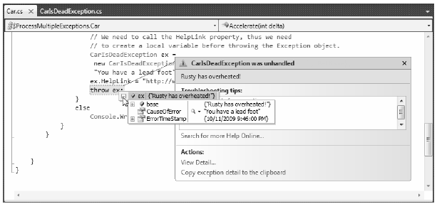
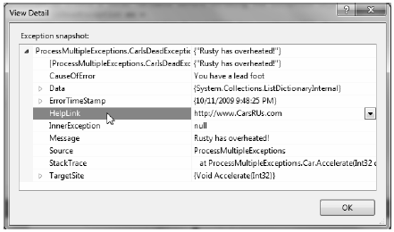

Do be aware that Visual Studio 2010 supplies a number of tools that help you debug unhandled custom exceptions. Again, assume you have increased the speed of a Car object beyond the maximum. If you start a debugging session within Visual Studio 2010 (using the Debug > Start Debugging menu selection), Visual Studio automatically breaks at the time the uncaught exception is thrown. Better yet, you are presented with a window (see Figure 7-4) displaying the value of the Message property.
Figure 7-4 Debugging unhandled custom exceptions with Visual Studio 2010
Note If you fail to handle an exception thrown by a method in the .NET base class libraries, the Visual Studio 2010 debugger breaks at the statement that called the offending method
If you click the View Detail link, you will find the details regarding the state of the object (see Figure 7-5).
Figure 7-5 Viewing exception details